전산응용기계제도기능사 (2010-01-31 기출문제)
1과목: 기계재료 및 요소
1. 델타메탈(delta metal)의 성분으로 올바른 것은?
- 6.4황동에 철을 1~2% 첨가
- 7.3황동에 주석을 3% 내외 첨가
- 6.4황동에 망간을 1~2% 첨가
- 7.3황동에 니켈을 3% 내외 첨가
(정답률: 61%)

2. 핀 이음에서 한쪽 포크(fork)에 아이(eye)부분을 연결하여 구멍에 수직으로 평행 핀을 끼워 두 부분이 상대적으로 각운동을 할 수 있도록 연결한 것은?
- 코터
- 너클 핀
- 분할 핀
- 스플라인
(정답률: 43%)
3. 다음 금속 중 비중이 가장 큰 것은?
- 철
- 구리
- 납
- 크롬
(정답률: 48%)
4. 두 축이 교차하는 경우에 동력을 전달하려면 어떤 기어를 사용하여야 하는가?
- 스퍼기어
- 핼리컬기어
- 래크
- 베벨기어
(정답률: 59%)
5. 양끝을 고정한 단면적 2cm2인 사각봉이 온도 -10℃에서 가열되어 50℃가 되었을 때 재료에 발생하는 열응력은? (단, 사각봉의 세로탄성계수는 21000 N/mm2, 선팽창계수는 0.000012 N/℃ 이다.)(오류 신고가 접수된 문제입니다. 반드시 정답과 해설을 확인하시기 바랍니다.)
- 25.20 N/mm2
- 15.12 N/mm2
- 35.80 N/mm2
- 29.90 N/mm2
(정답률: 41%)
6. 동력전달용 V벨트의 규격(형)이 아닌 것은?
- B
- A
- F
- E
(정답률: 74%)
7. 합성수지의 공통된 성질 중 틀린 것은?
- 가볍고 튼튼하다.
- 전기 절연성이 좋다.
- 단단하며 열에 강하다.
- 가공성이 크고 성형이 간단하다.
(정답률: 66%)
8. 나사종류의 표시기호 중 틀린 것은?
- 미터 보통 나사 - M
- 유니파이 가는 나사 - UNC
- 미터 사다리꼴 나사 - Tr
- 관용 평행 나사 - G
(정답률: 58%)
9. 하물(荷物)을 감아올릴 때는 제동작용은 하지 않고 클러치 작용을 하며, 내릴 때는 하물 자중에 의해 브레이크 작용을 하는 것은?
- 블럭 브레이크
- 밴드 브레이크
- 자동하중 브레이크
- 축압 브레이크
(정답률: 73%)
10. 외경이 500㎜, 내경이 490㎜인 얇은 원통의 내부에 3MPa의 압력이 작용할 때 원주 방향의 응력은 몇 N/mm2 인가?
- 75
- 147
- 222
- 294
(정답률: 45%)
2과목: 기계가공법 및 안전관리
11. 비중이 8.90이고 용융온도가 1453℃인 은백색의 금속으로 도금으로도 널리 이용되는 것은?
- Cu
- W
- Ni
- Si
(정답률: 45%)
12. 스프링 소재를 기준에 따라 금속 스프링과 비금속 스프링으로 분류할 때 비금속 스프링에 속하지 않은 것은?
- 고무 스프링
- 합성수지 스프링
- 비철 스프링
- 공기 스프링
(정답률: 55%)
13. 베어링의 호칭 번호 6304에서 6은?
- 형식기호
- 치수기호
- 지름번호
- 등급기준
(정답률: 68%)
14. 일반적으로 탄소강과 주철로 구분되는 가장 적절한 탄소(C) 함량(%) 한계는?
- 0.15
- 0.77
- 2.11
- 4.3
(정답률: 48%)
15. 주조용 알루미늄(Al)합금 중에서 Al-Si 계에 속하는 것은?
- 실루민
- 하이드로날륨
- 라우탈
- 와이(Y)합금
(정답률: 53%)
16. 테이블 이송나사와 피치가 6mm인 밀링머신으로 지름이 40mm인 일감에 리드 200mm인 오른나사 헬리컬 홈을 깎으려고 할 때, 나선각은 약 몇 도인가?
- 15°
- 20°
- 28°
- 32°
(정답률: 32%)
17. CNC선반 프로그래밍에서 각 코드의 기능 설명으로 틀린 것은?
- G : 준비기능
- T : 절삭기능
- F : 이송기능
- M : 보조기능
(정답률: 55%)
18. 호닝작업의 특징에 대한 설명으로 맞지 않는 것은?
- 발열이 적고 경제적인 정밀작업이 가능하다.
- 표면거칠기를 좋게 할 수 있다.
- 정밀한 치수로 가공할 수 있다.
- 커터에 의한 가공보다 절삭능률이 좋다.
(정답률: 53%)
19. 원통 연삭 작업에서 테이블의 총 이송길이(가공물 및 연삭숫돌 길이의 합) 100mm, 연삭횟수 1회, 공작물 회전수 500rpm, 1회전당 이송량 0.2mm/rev일 때 가공시간은?(오류 신고가 접수된 문제입니다. 반드시 정답과 해설을 확인하시기 바랍니다.)
- 1분
- 2분
- 3분
- 4분
(정답률: 33%)
20. 널링 가공 방법에 대한 설명이다. 틀린 것은?
- 소성 가공이므로 가공 속도를 빠르게 한다.
- 널링을 하게 되면 지름이 커지게 되므로 도면 치수보다 약간 작게 가공한 후 설정한다.
- 널링 작업을 할 때에는 공구대와 심압대를 견고하게 고정해야 한다.
- 절삭유를 충분히 공급하고 브러시로 칩을 제거한다.
(정답률: 50%)
21. 절삭유의 역할로서 적당한 것은?
- 공구 수명을 단축시킨다.
- 공작물 변형을 일으킨다.
- 마찰과 마모를 증가시킨다.
- 가공면의 표면조도를 향상시킨다.
(정답률: 73%)
22. 선반 작업에 사용되는 센터 중에서 단면을 절삭해야만 할 경우 사용되는 것은?
- 보통 센터
- 초경합금을 경납땜한 센터
- 베어링 센터
- 하프 센터
(정답률: 49%)
23. 스케일(scale)과 베이스(base) 및 서피스 게이지를 하나의 기본 구조로 하는 게이지는?
- 버니어 캘리퍼스
- 마이크로미터
- 블록 게이지
- 하이트 게이지
(정답률: 48%)
24. 각도를 측정할 수 있는 측정기는?
- 버니어 캘리퍼스
- 오토 콜리메이터
- 옵티컬 플랫
- 하이트 게이지
(정답률: 46%)
25. 기계·설비의 설계과정에서 안전화 확보에 고려하지 않아도 되는 사항은?
- 외관의 안전화
- 기능의 안전화
- 운전 비용의 안전화
- 구조부분의 안전화
(정답률: 73%)
3과목: 기계제도
26. 정투상법으로 물체를 투상하여 정면도를 기준으로 배열할 때 제1각법 또는 제3각법에 관계없이 배열의 위치가 같은 투상도는?
- 저면도
- 좌측면도
- 평면도
- 배면도
(정답률: 63%)
27. 투상도의 선택방법으로 맞는 것은?
- 물체의 특징을 가장 잘 나타내는 면을 평면도로 선택한다.
- 선반 가공의 경우, 가공이 많은 쪽이 왼쪽에 있도록 수평 상태로 그린다.
- 길이가 긴 물체는 길이 방향으로 놓은 자연스런 상태로 그린다.
- 정면도를 보충하는 다른 투상도는 되도록 크게 많이 그린다.
(정답률: 52%)
28. 모양에 따른 선의 종류에 대한 설명으로 틀린 것은?
- 실선 : 연속적으로 이어진 선
- 파선 : 짧은 선을 일정한 간격으로 나열한 선
- 1점쇄선 : 길고 짧은 2종류의 선을 번갈아 나열한 선
- 2점쇄선 : 긴선 2개와 짧은 선 2개를 번갈아 나열한 선
(정답률: 72%)
29. 단면도에 대한 설명으로 틀린 것은?
- 개스킷이나 철판과 같이 극히 얇은 제품의 단면표시는 1개의 굵은 일점쇄선으로 표시한다.
- 치수, 문자, 기호는 해칭이나 스머징보다 우선하므로 해칭이나 스머징을 중단하거나 피해서 기입한다.
- 절단면 뒤에 나타나는 숨은선과 중심선은 표시하지 않는 것을 원칙으로 한다.
- 단면 표시는 45도의 가는실선으로 단면부의 면적에 따라 3~5㎜의 간격으로 경사선을 긋는다.
(정답률: 41%)
30. 물체의 가공 전이나 가공 후의 모양을 나타낼 때 사용되는 선의 종류는?
- 가는 2점쇄선
- 굵은 2점쇄선
- 가는 1점쇄선
- 굵은 1점쇄선
(정답률: 57%)
31. 도면상에 구멍, 축 등의 호칭치수를 의미하는 치수는?
- IT치수
- 실치수
- 허용한계치수
- 기준치수
(정답률: 42%)
32. 물체의 표면에 기름이나 광명단을 칠하고 그 위에 종이를 대고 눌러서 실제의 모양을 뜨는 스케치 방법은?
- 모양뜨기 방법
- 프리핸드법
- 사진법
- 프린트법
(정답률: 64%)
33. 치수기입 중 치수의 배치 방법이 아닌 것은?
- 누진치수 기입법
- 병렬치수 기입법
- 가로치수 기입법
- 좌표치수 기입법
(정답률: 57%)
34. 18JS7의 공차 표시가 옳은 것은? (단, 기본공차의 수치는 18㎛이다.)
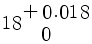
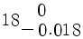
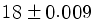
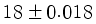
(정답률: 46%)
35. 최대높이 거칠기 값이 25S로 표시되어있을 때 측정값은?
- 0.025㎜
- 0.25㎜
- 2.5㎜
- 25㎜
(정답률: 46%)
36. 다음 테이퍼 표기법 중 표기방법이 틀린 것은?
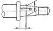
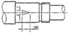
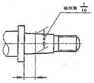
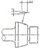
(정답률: 40%)
37. 다음 중 화살표 방향에서 본 그림을 나타낸 것은?
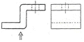
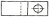
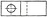
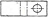
(정답률: 72%)
38. 다음 그림이 뜻하는 기하공차는?
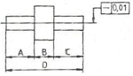
- A부분의 직진도
- B부분의 직진도
- C부분의 직진도
- D부분의 직진도
(정답률: 82%)
39. 데이텀이 필요치 않은 기하공차의 기호는?
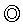
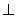
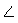
(정답률: 61%)
40. 조립한 상태에서 끼워맞춤 공차의 기호를 표시한 것으로 옳은 것은?
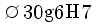
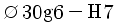
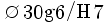
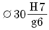
(정답률: 53%)
41. 다음 [그림]의 도면 양식에 관한 설명 중 틀린 것은?
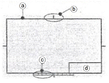
- ⓐ는 0.5㎜이상의 굵은 실선으로 긋고 도면의 윤곽을 나타내는 선이다.
- ⓑ는 0.5㎜이상의 굵은 실선으로 긋고 마이크로필름으로 촬영할 때 편의를 위하여 사용한다.
- ⓒ는 0.5㎜이상의 굵은 실선으로 긋고 출력된 도면을 규격에 맞게 자르는데 사용하는 눈금자이다.
- ⓓ는 표제란으로 척도, 투상법, 도번, 도명, 설계자 등 도면에 관한 정보를 표시한다.
(정답률: 63%)
42. 도면의 변경 방법에 대한 사항으로 틀린 것은?
- 변경 전의 형상을 알 수 있도록 한다.
- 변경된 부분에 수정회수를 삼각형 기호로 표시한다.
- 도면 변경란에 변경이유 및 연월일을 기입한다.
- 변경 전의 치수를 지우고 기입한다.
(정답률: 66%)
43. 정투상 방법에 따라 평면도와 우측면도가 다음과 같다면 정면도에 해당하는 것은?
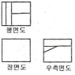
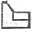
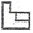
(정답률: 49%)
44. 다음 표면의 줄무늬 방향 기호 R이 뜻하는 것은?
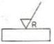
- 가공에 의한 커터의 줄무늬가 기호를 기입한 면의 중심에 대하여 대략 레이디얼 모양임을 표시
- 가공에 의한 커터의 줄무늬 방향이 기호를 기입한 그림의 투상면에 평행임을 표시
- 가공에 의한 커터의 줄무늬 방향이 기호를 기입한 그림의 투상면에 직각임을 표시
- 가공에 의한 커터의 줄무늬가 여러 방향으로 교차 또는 무방향임을 표시
(정답률: 80%)
45. 다음은 어떤 물체를 제3각법으로 투상하여 정면도와 우측면도를 나타낸 것이다. 평면도로 옳은 것은?
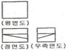
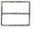
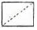
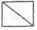
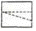
(정답률: 44%)
46. 다음은 축의 도시에 대한 설명이다 맞는 것은?
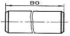
긴축은 중간부분을 파단하여 짧게 그리며, 그림의 80은 짧게 줄인 치수를 기입한 것이다.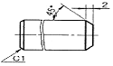
축의 끝에는 모떼기를 하고 모떼기 치수기입은 그림과 같이 기입할 수 있다.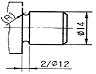
그림은 축에 단을 주는 치수기입으로, 홈의 나비가 12㎜이고 홈의 지름이 2㎜이다.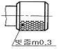
그림은 빗줄널링에 대한 도시이며, 축선에 대하여 45° 엇갈리게 그린다.
(정답률: 54%)
47. 기어의 도시 방법에 관한 내용으로 올바른 것은?
- 이끝원은 가는 실선으로 그린다.
- 피치원은 가는 1점 쇄선으로 그린다.
- 이뿌리원은 2점 쇄선으로 그린다.
- 잇줄 방향은 보통 3개의 파선으로 그린다.
(정답률: 69%)
48. V벨트의 종류 중에서 단면적이 가장 작은 것은?
- M형
- A형
- C형
- E형
(정답률: 67%)
49. 나사의 제도방법에 대한 설명으로 옳은 것은?
- 암나사의 안지름은 가는 실선으로 그린다.
- 불완전 나사부와 완전 나사부의 경계선은 가는실선으로 그린다.
- 수나사와 암나사의 결합부분은 암나사 기준으로 표시한다.
- 단면 시 암나사는 안지름까지 해칭한다.
(정답률: 39%)
50. 평행키에서 나사용 구멍이 없는 것의 보조기호는?
- P
- PS
- T
- TG
(정답률: 47%)
51. 스퍼 기어에서 모듈이 2, 기어의 잇수가 30인 경우 피치원의 지름은 몇 ㎜ 인가?
- 15
- 32
- 60
- 120
(정답률: 82%)
52. 배관기호에서 유량계의 표시방법으로 바른 것은?
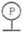
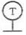
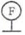
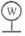
(정답률: 47%)
53. 스포로킷 휠에 대한 설명으로 틀린 것은?
- 스프로킷 휠의 호칭번호는 피치원 지름으로 나타낸다.
- 스프로킷 휠의 바깥지름은 굵은 실선으로 그린다.
- 그림에는 주로 스프로킷 소재를 제작하는데 필요한 치수를 기입한다.
- 스프로킷 휠의 피치원 지름은 가는 1점 쇄선으로 그린다.
(정답률: 43%)
54. 호칭번호가 6203인 베어링이 있다. 이 베어링 안지름의 크기는 몇 ㎜인가?
- 3
- 10
- 15
- 17
(정답률: 75%)
55. 규격치수를 사용하지 않고 수나사와 암나사의 약도를 그릴 때, 각부 치수를 결정하는 기준이 되는 것은?
- 수나사의 바깥지름
- 수나사의 골지름
- 암나사의 안지름
- 암나사의 골지름
(정답률: 68%)
56. 스풋 용접 이음의 기호는?
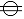
(정답률: 41%)
57. 서피스 모델링(sufrace modeling)의 특징을 설명한 것 중 틀린 것은?
- 복잡한 형상의 표현이 가능하다.
- 단면도를 작성할 수 없다.
- 물리적 성질을 계산하기가 곤란하다.
- NC가공 정보를 얻을 수 있다.
(정답률: 52%)
58. 다음은 컴퓨터의 입력장치 중 어느 것에 대한 설명인가?
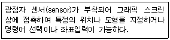
- 조이스틱(joy stick)
- 태블릿(tablet)
- 마우스(mouse)
- 라이트 펜(light pen)
(정답률: 70%)
59. 그림과 같이 점 A에서 점 B로 이동하려고 한다. 좌표계 중 어느 것을 사용해야 하는가? (단, A, B 점의 위치는 알 수 없다.)
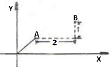
- 상대 좌표
- 절대 좌표
- 극 좌표
- 원통 좌표
(정답률: 74%)
60. 다음 중 컴퓨터 시스템에서 정보를 기억하는 최소 단위는?
- 비트(bit)
- 바이트(byte)
- 워드(word)
- 블록(block)
(정답률: 81%)